Top 100 Albums
The greatest ablums of all time!!! (According to me)
Note
- Work in progress…
- One album per artist.
- Classical releases are not eligible and will be covered in a separate list.
71. JunxPunx - Reminder
Year: 2014
Country: 🇯🇵 Japan
Genres: Hi-Tech Psytrance
Favorite Song: Secret Girl
59. Snapcase - Progression Through Unlearning
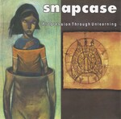
Year: 1997
Country: 🇺🇸 USA
Genres: Metalcore
Favorite Song: Guilty by Ignorance
56. Gris - Il était une forêt
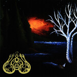
Year: 2007
Country: 🇺🇸 USA
Genres: Depressive Black Metal
Favorite Song: Il était une forêt
50. Tyler, the Creator - Igor
Year: 2019
Country: 🇺🇸 USA
Genres: Neo-Soul
Favorite Song: EARFQUAKE
49. Ninajirachi - I Love My Computer
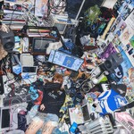
Year: 2025
Country: 🇬🇧 United Kingdom
Genres: Electrohouse
Favorite Song: Infohazard
48. Weyes Blood - Titanic Rising
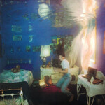
Year: 2019
Country: 🇺🇸 USA
Genres: Psychedelic Pop
Favorite Song: Andromeda
47. toe - For Long Tomorrow
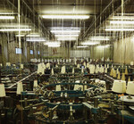
Year: 2009
Country: 🇯🇵 Japan
Genres: Post-Rock, Midwest Emo
Favorite Song: Goodbye
45. Judas Priest - Painkiller
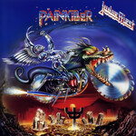
Year: 1990
Country: 🇬🇧 United Kingdom
Genres: Speed Metal
Favorite Song: Painkiller
44. Kate Bush - Hounds of Love
Year: 1985
Country: 🇬🇧 United Kingdom
Genres: Art Pop
Favorite Song: Running Up That Hill (A Deal With God)
43. My Chemical Romance - Three Cheers for Sweet Revenge
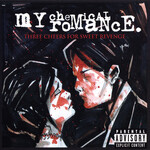
Year: 2004
Country: 🇺🇸 USA
Genres: Emo-Pop
Favorite Song: Helena
42. Marvin Gaye - What’s Going On
Year: 1971
Country: 🇺🇸 USA
Genres: Smooth Soul
Favorite Song: What’s Going On
40. Angelo Badalamenti - Twin Peaks: Fire Walk With Me
Year: 1992
Country: 🇺🇸 USA
Genres: Dark Jazz
Favorite Song: Questions in a World of Blue
36. Lingua Ignota - Caligula
Year: 2019
Country: 🇺🇸 USA
Genres: Neoclassical Darkwave
Favorite Song: DO YOU DOUBT ME TRAITOR
35. Iron Maiden - The Number of the Beast
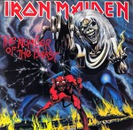
Year: 1982
Country: 🇬🇧 United Kingdom
Genres: Heavy Metal
Favorite Song: Run to the Hills
33. Javiera Mena - Esquemas juveniles
Year: 2005
Country: 🇪🇸 Spain
Genres: Indie Pop
Favorite Song: Cámara lenta
32. Cameron Winter - Heavy Metal
Year: 2024
Country: 🇺🇸 USA
Genres: Singer-Songwriter
Favorite Song: $0.00
31. Portishead - Dummy
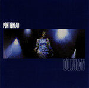
Year: 1994
Country: 🇬🇧 United Kingdom
Genres: Trip Hop
Favorite Song: Glory Box
30. Electric Light Orchestra - Time
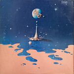
Year: 1981
Country: 🇬🇧 United Kingdom
Genres: Pop Rock
Favorite Song: Twilight
29. Panopticon - …And Again Into the Light
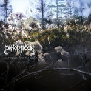
Year: 2021
Country: 🇺🇸 USA
Genres: Atmospheric Black Metal
Favorite Song: Dead Loons
28. Parannoul - To See the Next Part of the Dream
Year: 2021
Country: 🇰🇷 South Korea
Genres: Shoegaze
Favorite Song: White Ceiling
27. FKA Twigs - Magdalene
Year: 2019
Country: 🇬🇧 United Kingdom
Genres: Art Pop
Favorite Song: Cellophane
26. Rage Against the Machine - Rage Against the Machine
Year: 1992
Country: 🇺🇸 USA
Genres: Alternative Metal
Favorite Song: Killing in the Name
25. David Bowie - Low
Year: 1977
Country: 🇬🇧 United Kingdom
Genres: Art Rock, Ambient
Favorite Song: Warszawa
24. Perfume - ⊿ (Triangle)
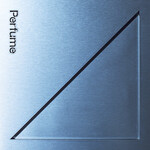
Year: 2008
Country: 🇯🇵 Japan
Genres: Electropop
Favorite Song: Dream Fighter
23. Ocean Machine - Biomech
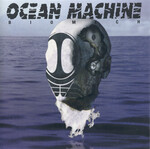
Year: 1997
Country: 🇨🇦 Canada
Genres: Progressive Metal
Favorite Song: Bastard
22. Nas - Illmatic
Year: 1994
Country: 🇺🇸 USA
Genres: Boom Bap
Favorite Song: N.Y. State of Mind
21. My Bloody Valentine - Loveless
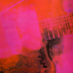
Year: 1991
Country: 🇮🇪 Ireland
Genres: Shoegaze
Favorite Song: when you sleep
20. Kessoku Band - Kessoku Band
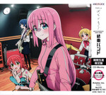
Year: 2022
Country: 🇯🇵 Japan
Genres: Shimokita-kei
Favorite Song: Rockn’ Roll, Morning Light Falls on You
19. System of a Down - Toxicity
Year: 2001
Country: 🇺🇸 USA
Genres: Alternative Metal
Favorite Song: Aerials
18. Lana Del Rey - Norman Fucking Rockwell!
Year: 2018
Country: 🇺🇸 USA
Genres: Art Pop
Favorite Song: Venice Bitch
17. Kendrick Lamar - To Pimp a Butterfly
Year: 2015
Country: 🇺🇸 USA
Genres: West Coast Hip Hop
Favorite Song: Alright
16. Ichiko Aoba - Windswept Adan
Year: 2020
Country: 🇯🇵 Japan
Genres: Chamber Folk
Favorite Song: Porcelain
15. Seatbelts - Cowboy Bebop
Year: 1998
Country: 🇯🇵 Japan
Genres: Jazz
Favorite Song: Space Lion
14. The Pillows - FLCL Original Soundtrack No. 3
Year: 2005
Country: 🇯🇵 Japan
Genres: Power Pop
Favorite Song: Last Dinosaur
13. Stevie Wonder - Songs in the Key of Life
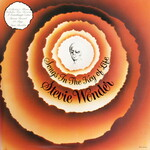
Year: 1976
Country: 🇺🇸 USA
Genres: Pop Soul
Favorite Song: Sir Duke
12. Gorguts - Colored Sands
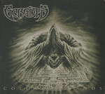
Year: 2013
Country: 🇨🇦 Canada
Genres: Dissonant Death Metal
Favorite Song: Le Toit Du Monde
11. Carly Rae Jepsen - E·MO·TION
Year: 2015
Country: 🇨🇦 Canada
Genres: Synthpop
Favorite Song: Run Away With Me
10. Cocteau Twins - Heaven or Las Vegas
Year: 1990
Country: 🇬🇧 United Kingdom
Genres: Dream Pop
Favorite Song: Heaven or Las Vegas
9. Radiohead - In Rainbows
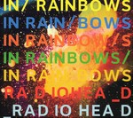
Year: 2008
Country: 🇬🇧 United Kingdom
Genres: Art Rock
Favorite Song: Weird Fishes/Arpeggi
8. Pink Floyd - Wish You Were Here
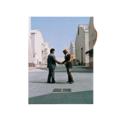
Year: 1975
Country: 🇬🇧 United Kingdom
Genres: Art Rock
Favorite Song: Wish You Were Here
7. Mac Miller - Circles
Year: 2020
Country: 🇺🇸 USA
Genres: Neo-Soul
Favorite Song: Good News
6. Keiichi Okabe & Keigo Hoashi - NieR:Automata
Year: 2017
Country: 🇯🇵 Japan
Genres: Cinematic Classical, Ambient, New Age
Favorite Song: City Ruins (Rays of Light)
5. Converge - Jane Doe
Year: 2001
Country: 🇺🇸 USA
Genres: Mathcore
Favorite Song: Jane Doe
4. Kinoko Teikoku - Eureka
Year: 2013
Country: 🇯🇵 Japan
Genres: Indie Rock, Shoegaze
Favorite Song: Musician
3. Shiina Ringo - Kalk Samen Kuri no Hana
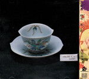
Year: 2003
Country: 🇯🇵 Japan
Genres: Art Pop, Art Rock
Favorite Song: Shuukyou -Religion-
2. Carissa’s Wierd - Songs About Leaving
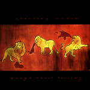
Year: 2002
Country: 🇺🇸 USA
Genres: Slowcore
Favorite Song: September Come Take This Heart Away
1. Light Bringer - Scenes of Infinity
Year: 2013
Country: 🇯🇵 Japan
Genres: Power Metal, Symphonic Metal
Favorite Song: Hyperion